来源：https://hjerl890wo.feishu.cn/docx/Qnkud8qFYo7e55xwMaDcRPZinfh
嗨，我是bin，在过去的半年时间里
我们有个小团队一直在耕耘于周易小国学的引流
运气很好，我们是三月底启动的，4月初就通过直播拿到了正反馈，并带了几位小圈子的朋友成功复制
当然当时我们还不知道这一行的门道，所以业绩仅仅只是基于咨询的一转单，第一个月的单粉产出只有10-30块
后来经过那么多的坑或者探索，才慢慢开始做到60-80的单粉产出区间
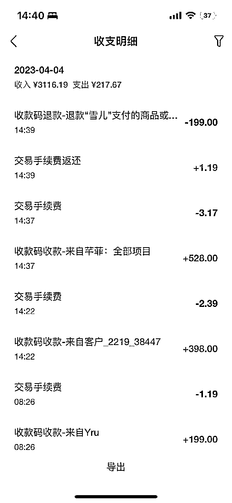
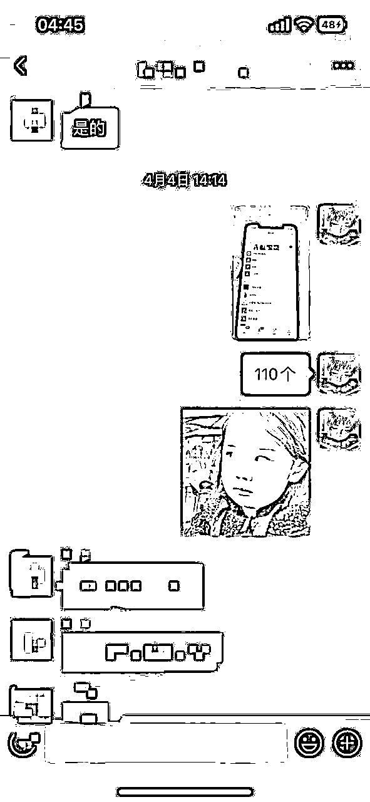
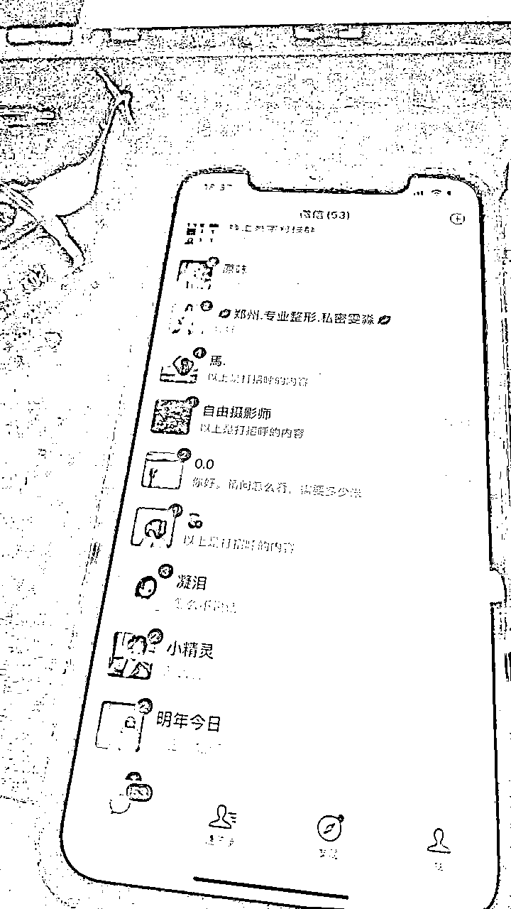
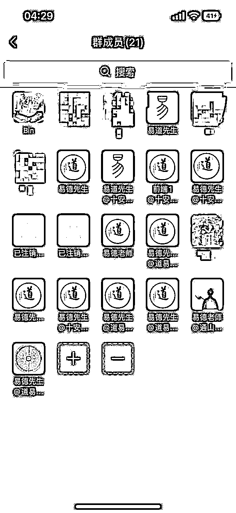
以下是部分员工号视频数据以及员工号直播矩阵数据
相关的数据还有非常多，因为近期的账号需求更偏向于个人号。员工号的数据都没有怎么看了
（数据没有很亮眼，但是引流效果还不错）
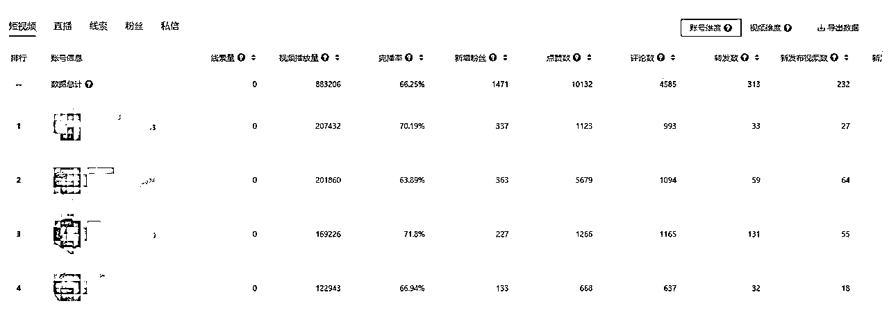
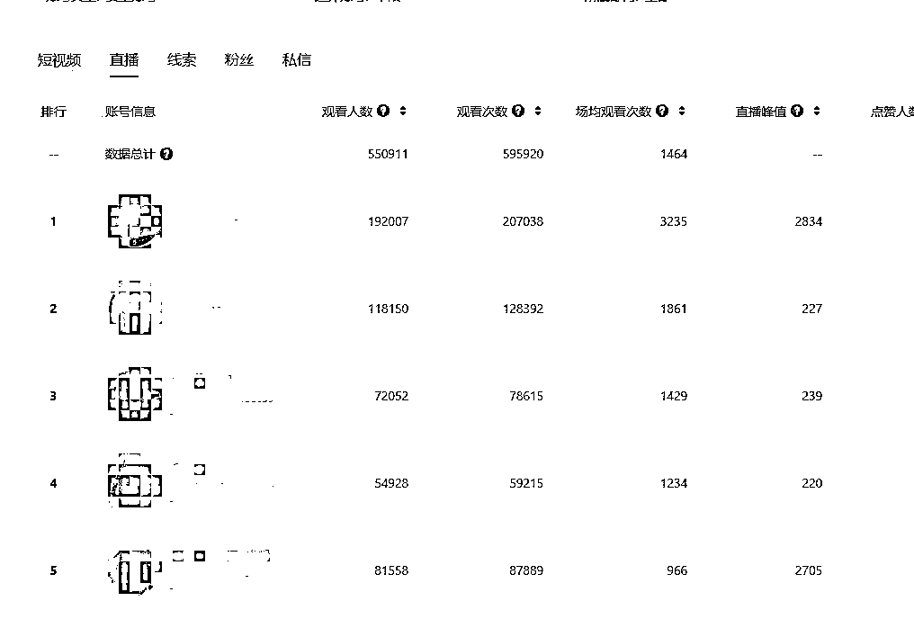
本文会详细讲讲关于周易命理在抖音的各类引流模型的方式方法技巧
希望此文章对您有所启发
对于小国学感兴趣的圈友们可以耐心看看
为什么要先说产品？通常情况下，在做一个项目之前，只有先了解产品，才能做好流量。
几个争议比较大的我就不写进去了
相对常见的术的种类：小六壬，大六壬，四柱八字，紫微斗数，梅花易数，奇门遁甲，六爻等
主要功能：根据你所提供之信息，分析预测未来的发展趋势，或基于某个具体的问题，给出相应的判断
卖点：趋利避害，情绪价值，意见参考，信息咨询，正向的心理安慰，在某些情况下，道长算出他未来可能会有非常严重的事情发生（岁运并临），但是不会直接跟他说，而是引导他往阳光的未来方向去说，给予其希望
提供此项交付的人群：道长，各类居士，盲派高手，家传人士......等
姻缘 事业 财运，子女缘，学业等
PS:绝大部分线上交付的都是预测，收费根据模型的不同而不同，99-2k起不等...
这个一般就是阴阳宅堪舆，一般引流遇到的还是比较少，通常需要强背书的情况下，会比较适用这个产品。
强背书不一定要指你的出身强，风水师的专业能力出众也属于强背书。
风水布局之类的。单次一般收费在5-7位数不等。
这个就不展开讲了，小到手机壳贴，大到天师符，这些祈福类的。懂的都懂
代上香，以及点灯还是相对正规的，因为很多香客会求一个心安。然后是需要跟道观强合作的情况下，可以做这个产品。一般收费情况是按周、月收费。
仅仅只是部分形式
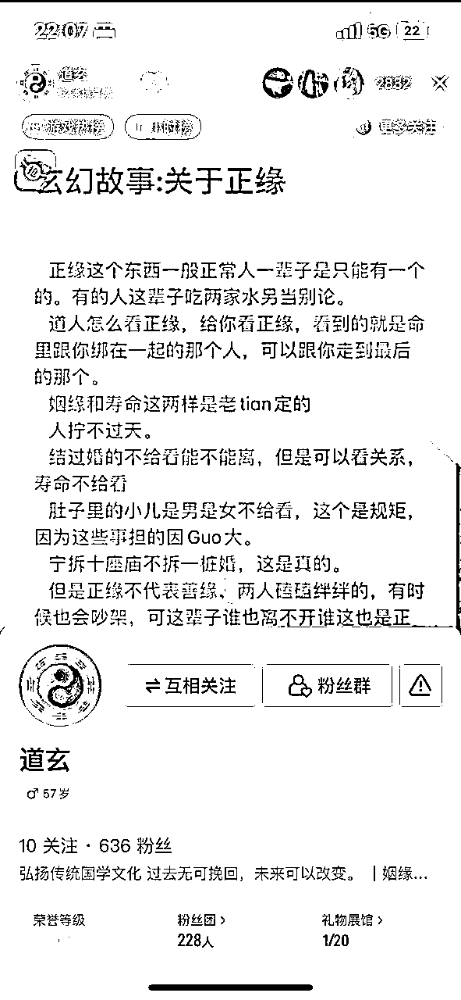
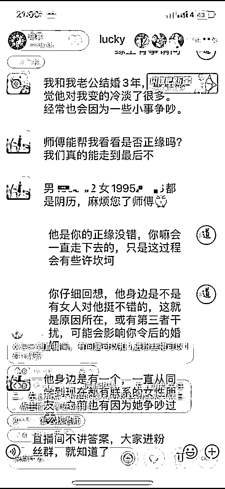
我们的号
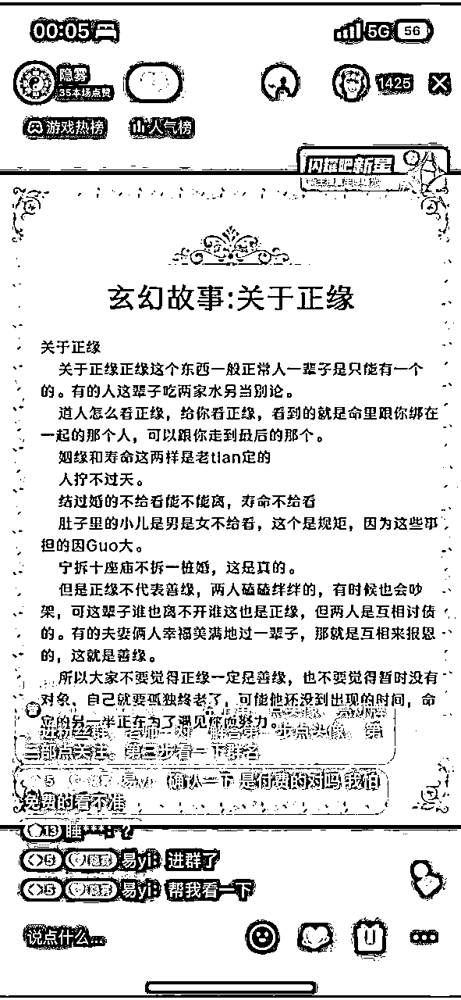
我们的号
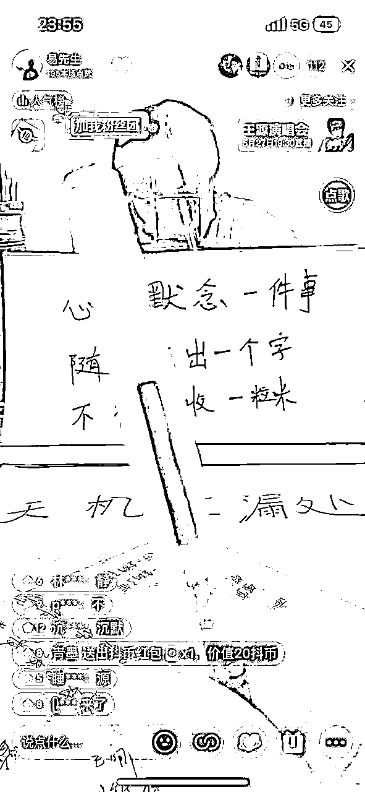
我们的号
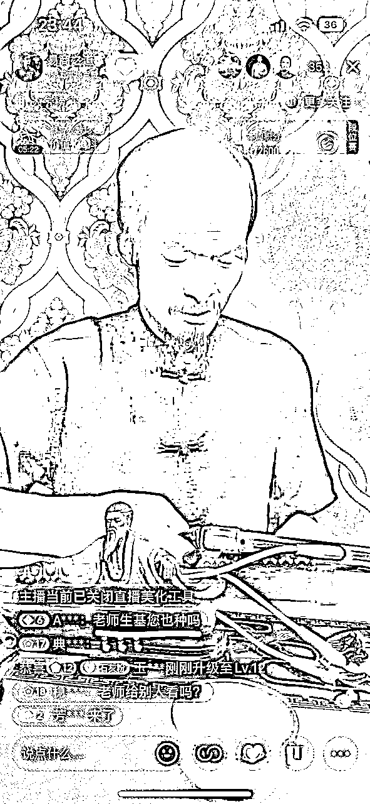
同行A+B形式
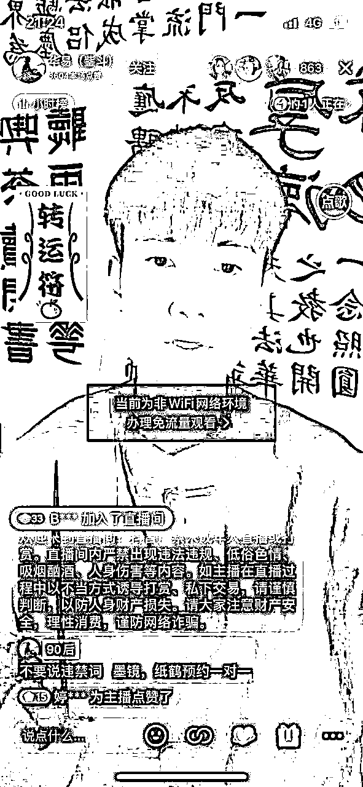
同行露脸形式
为啥先说直播呢，因为我们是先做的直播，再弄的别的😂
而且相对于图文，我们其实更擅长做直播，因为前两年的项目都是基于直播带货，起号起了N个
像图1-4的这种号，我们有二十多个能跑的，在4月的时候
最好的一个号，有一天撞了狗屎运场观上到了9w，在线2-3k一直维持到下播
那么以下篇幅，会详细介绍，此类型的直播是怎么做的
文中会有大量个人见解，如果觉得不对，那就是你对
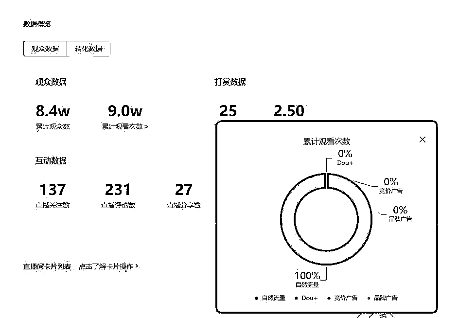
这个类型的直播模式，是用的手游直播，提前先制作好素材图片，然后用iPhone相册的幻灯片，循环播放+画外音口播的方式。
重点：素材需要足够吸引人，能够一眼命中观众的心理。
优点：起号飞快，三天就能起来，0成本
为什么能起来？：图文作为直播间的主要内容，观众更能一眼看到你想要表达的东西，更吸引眼球，以及可以更好的过滤掉我们不需要的客户，留下目标客户，以我们的账号举例子，初始切入点是姻缘，感情的用户基数足够大，绝大部分客户需要的也是问感情的居多，能够更好的兜住系统推的绝大部分流量。我们给抖音的用户产生了价值，所以你获得了流量。
这种方式也可以用在情感，等其它类目....
我们这种类型的直播号，用的都是企业员工号，找朋友帮忙实名刷脸的，有关于这一块不懂的，可以在生财里搜索相关操作方式。一个蓝V主体可以开50个员工号（前提是要先做任务到黄金等级），这里就不再过多论述
进线路径：Feed推荐--看到你直播间----停留----进粉丝群----卡片/微信号进私域
养号又是一个老生常谈的话题了，个人觉得，一定要养号...不养号，必被风控
不评价那些说不需要养号的
因为养号的目的，是让你的项目少一些内部变量
当你的号做了一定数量 风控是必然的，比如说突然直播就不给DOU了，那就得先养一养
养号的第一天可以随便发一个作品
直播号在去年是不用发作品的
但今年感觉发几个作品更有安全感
养号这里就不多讲了，不需要你养多么牛逼，只要像个正常人一样就ok
当账号搞定了的时候，我们就要搞定素材
这里会推荐一个稿定设计https://www.gaoding.com/scenes/e-commerce
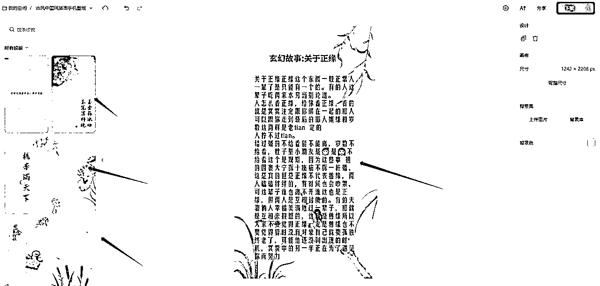
还是以我们之前的举例子
选择一个符合内容意境的背景，然后加上文字
生产出你的直播内容主体
这里需要多复制几张，因为相册的幻灯片要3-4张才不会异常
前提：账号已实名+有50个粉丝
准备工作：提前准备另外一台手机/电脑播放BGM，如果没有BGM直播间会非常枯燥
然后打开相册提前播放幻灯片
然后用另一台手机去看公屏
因为直播手机是直接录你的屏幕的 你看不到公屏
准备好粉丝群这些基础的设置
1.在抖音里点--加号---开直播--选择游戏直播
2.循环你的直播话术
“想问问题的姐妹们，可以进老师的粉丝群，XXXX” “没送灯牌的，给我送个灯牌，一会你进群以后我会优先回复”
“不知道怎么进群的，左上角点头像，点粉丝群，进去就可以了”
不断循环这三句话 说多错多，只要这三句话就可以了
3.起号节奏
第一场45min以上 2H最好 要灯牌，求也要求到灯牌来
第二场1-2H 看情况 要灯牌，求也要求到灯牌来
第二场1-2H 看情况 要灯牌，求也要求到灯牌来
......
.......
到了起来以后基本上播个20分钟就可以了
（因为你不下播，系统都会抬你）
一般情况下开播峰值能导个60-100个人加微信
注意：这里说的是加到微信的人数
ps：直播的时候可以多发抖币红包
此类型转化率10-20% 客单199-599
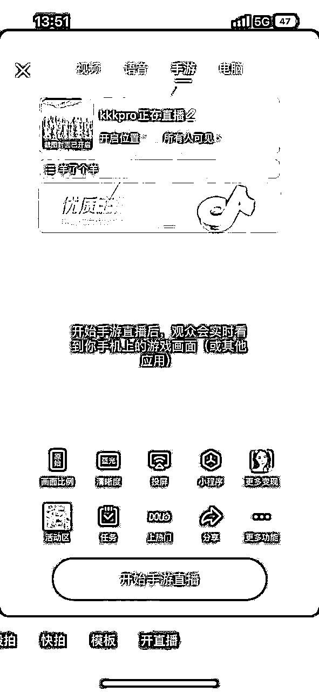
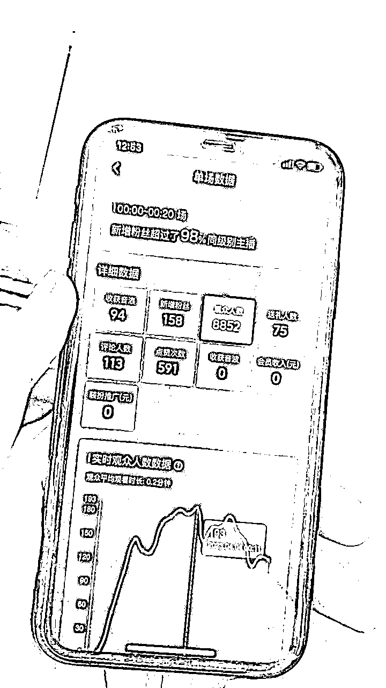
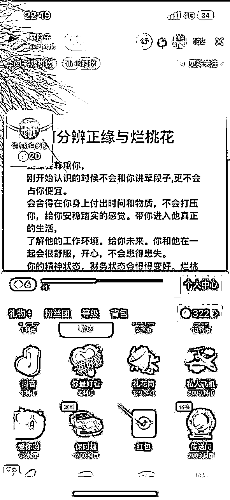
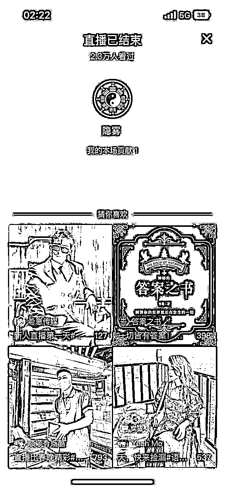
跑通一个之后，就可以启动下一个了
适用于其它类目
真人直播的类型一般有四种，1.写名字 2.有一定功底的付费连麦直接解盘 3.颜值演员出境纯导流 4.A+B模式导流
这里以写名字举例（因为我们只做过写名字）
其实做直播做的久的同学，看一眼直播间，脑子里立马就能把他拆的干干净净了
场景：我们这边用的是桌子加镜子增加场景的纵深，其实随便找个角落简单布置一下就行
1.场景需要突出主题
比如说你的直播主题是猜你心里想的是什么？
那么你在直播间的视觉设计里面就需要突出你的主题
2.主播只需要做两件事
写字，随便写，公屏有什么写什么
引导，写几个字，引导一波进群解惑
ps：这种形式的转化率我们只做到10% 单粉7块钱，本质上是属于泛粉直播
做的好的同行大佬单粉能做到14块，他的量级是一天进线2000-3000
这种写字的形式，需要搭配精心设计的营销模式才能发挥出最大的效益。
后来意识到这个问题的时候，我们就放弃了这个模式
易商之道这个账号，是这个模式的典型，直播间主图的这个人就是个演员，他具备外形，但是没有内核。
出镜人只需要坐在那里，然后由助理副播进行引导
要点：需要一个具备形象的人出境，不需要说话
很推荐有条件的人去干这个 我们没条件就没做
这种直播引来的都是高质量的
比如这个种生基，起步价就是6-7位数
直播就是 你是谁不重要，你像谁才重要
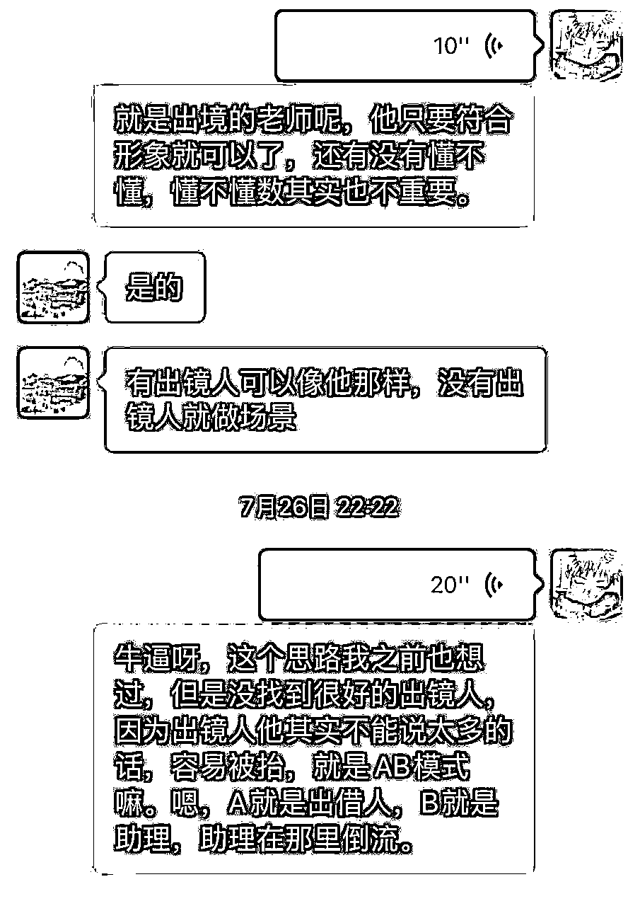
直播还有非常多的其它形式
比如在道观里播
连麦直播
还有电商直播物品转咨询的
...........
非常非常多的类型。
很容易迷失在同行的海洋里
文中没提到的 都是我没做过的
因为我知道我不具备做这种直播间的资源/条件
我们也尝试过用这种构图的直播间去产品转咨询
但是没啥效果
如果想在抖音上持续的去做直播
还是得需要业务能力强才健康
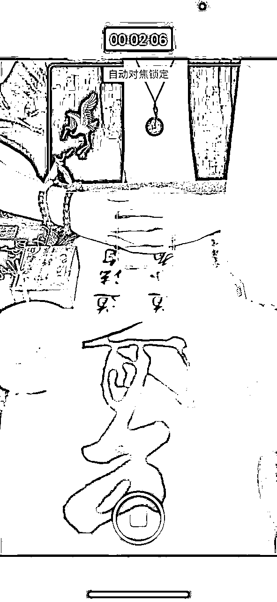
快速拿到反馈的方式
这个就更多了，甚至你可能在星球里都能找到不少教程 这里就不多细讲
这里我就以最简单的一种举例说明，评论区截图的形式
当时我们第一条作品就20w播放
因为太简单了，所以这个看看就行，客户质量并不是很好
我们现在其实主力引流就是图文，但是是垂类的图文，没有做这种泛粉了
这种图文只需要在你的作品里
用自己人的号去留生日然后问问题
自问自答截图
然后用评论区群聊置顶就可以引了
这种转化率只有10%左右
差的时候5%
一点都不好玩
人群过于年轻了
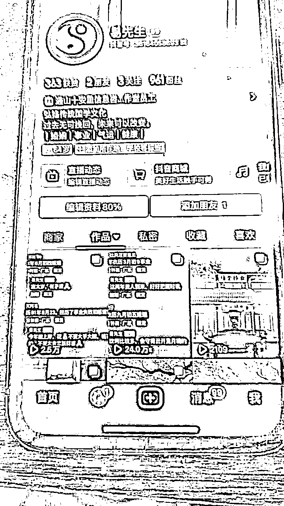
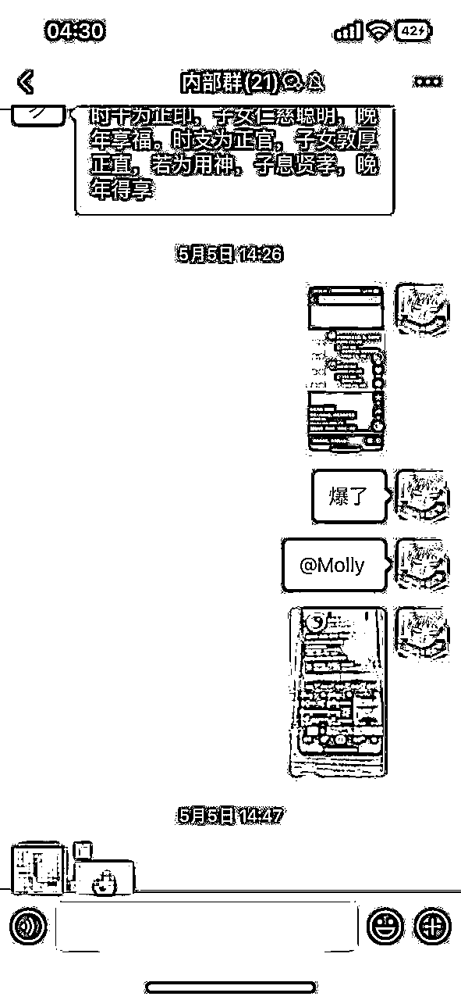
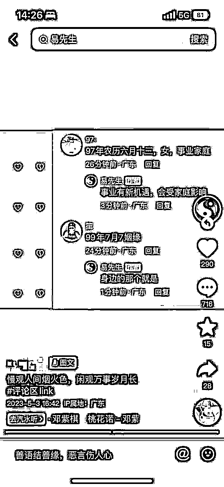
然后我们现在实际做的是更加精准的图文引流单粉产出相对更高，这个也是我们接下来的重点工程
这里需要重码保护一下
图文这个东西其实只要你刷的多
就知道有哪些，这个没啥技巧的
干就完了
一个人能整10-20个号
有手就行
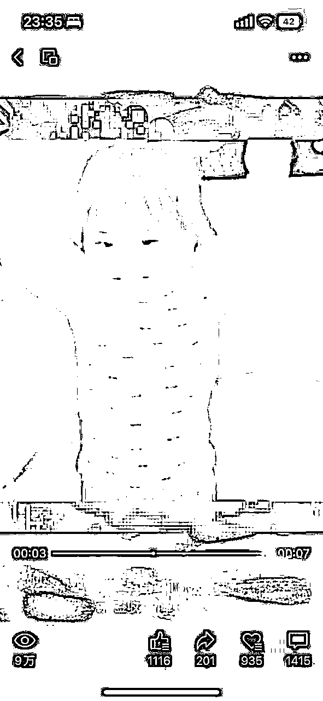
PS:图文板块说的比较少，因为我觉得这里面没有什么是解决不了的，如果有那就是账号数量的问题，可以让你形成壁垒，简单来说就是我觉得太简单了，没什么好讲的.
即使你不是做国学的，也可以看看这个板块，我觉得他可以应用上很多的内容类目，而且我看星球里写这一块的文章也比较少，希望对你有帮助，这个是我们实打实去实践出来的，可行性还是很高的
事情的起因是在6月中旬，有一天我偶然刷到一个24小时录播的直播间，直播内容是情感+国学，当时觉得很有意思，于是就跟朋友在那里反推他的业务模型
伪IP就是演员基于数据库的方向出演生成素材
数据库由短视频+录播素材组成
在经历了反推论证之后，我们开始了大量的数据调研
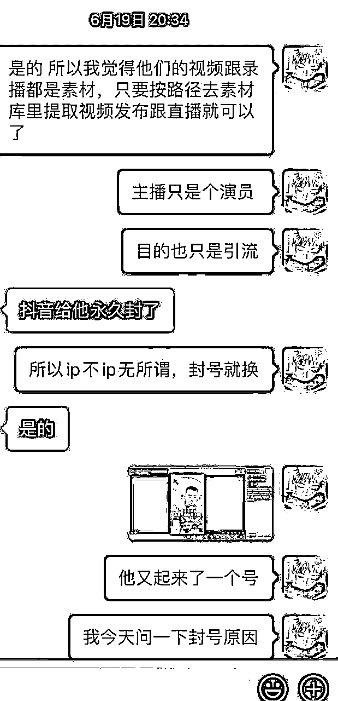
牛逼的是朋友实力足够强，直接找到了同行的中控台数据，有便于我们更好的去分析可行性
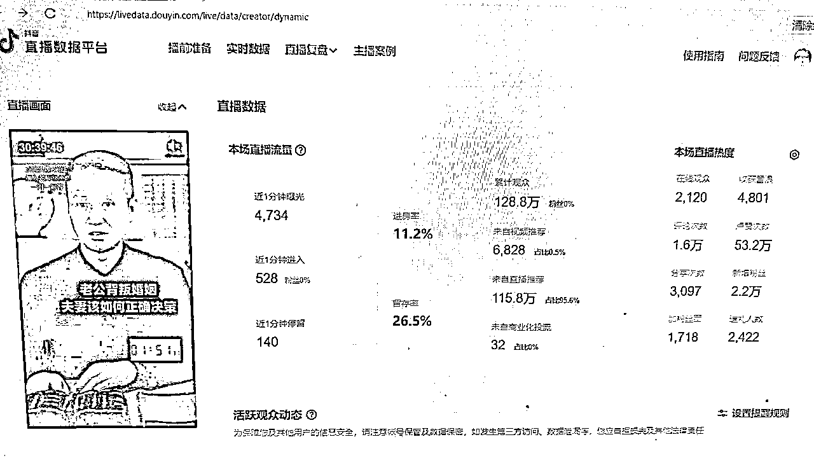
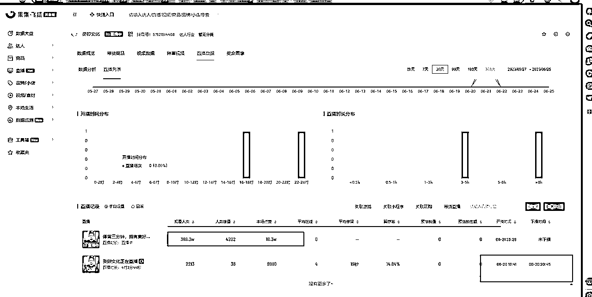
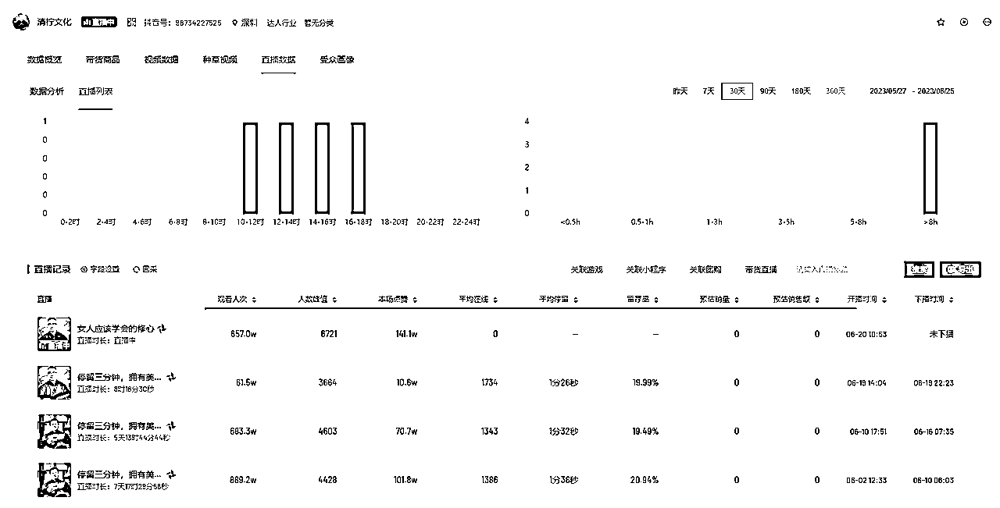
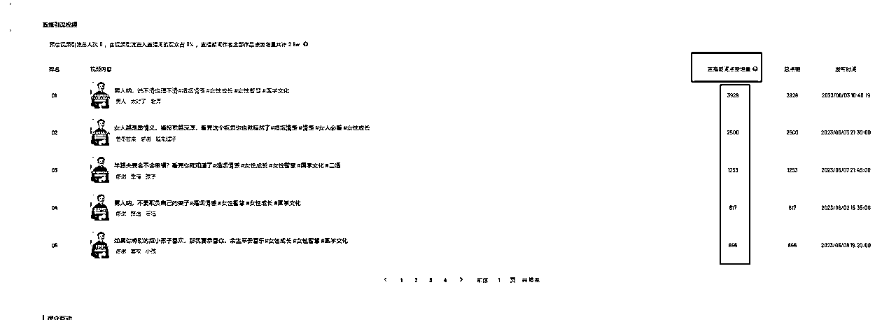
在获取了相当之多的数据之后，我们得出一个结论：这事能干
而朋友跟我的方向不同，他是直接收购对方团队，我是自己苦干（他可流通现金就有1k万） 我有我也这么干
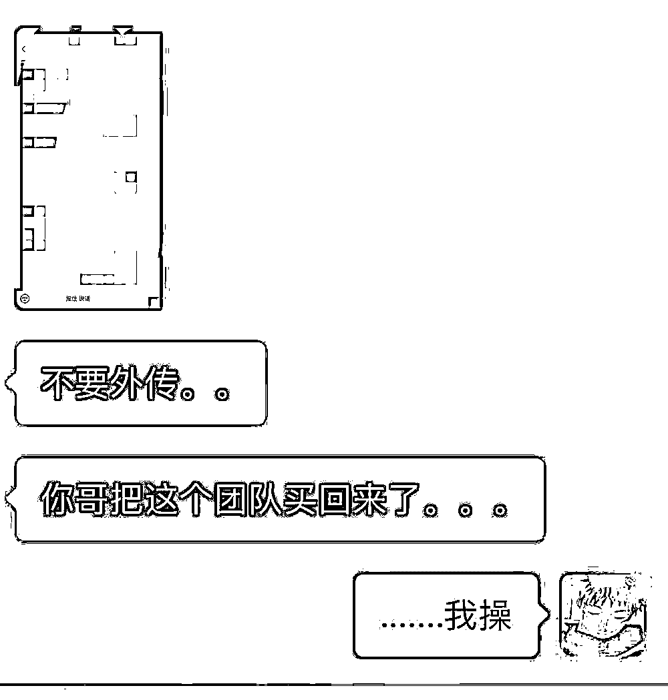
那么在得出结论之后我们开始了我们的选题库搭建
大致逻辑就是数十条短视频建立账号基础的权重
然后开启直播
短视频文稿+录播文稿（2w字）组成
一个房间四面墙，选了三面做墙布，那么我们就有了三个不同的场景
设备用的是索尼的A7C，因为A7M3不能长时间录制
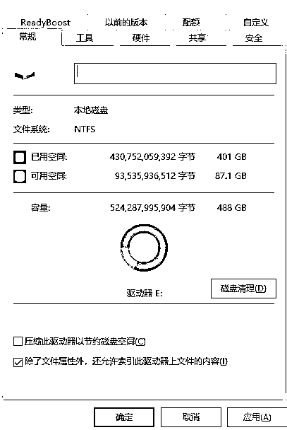
在拍了300个G的素材之后，数据已经开始有了正反馈
短视频一条点赞量达到了5K，此时还没有开始录播，这更加印证了可行性
难点：通常一个录播稿字数在2w字左右，录完时长在2H左右，中间要保证不能垮台，不然就是废片
打字打到这里已经很累了，我直接上图
1.软件需要用到直播伴侣，OBS
2.账号需要有1k粉
3.账号有视频数量基础
在这期间我请教了非常多的其它领域的无人直播大佬
总结出来的手抄起号逻辑
总结：没有黑科技，一切都是素材问题
我也曾经尝试请教过星球里的某大佬，关于某科技的问题，但是他没有鸟我，后面只能自己一步步的去实践
都是泪啊
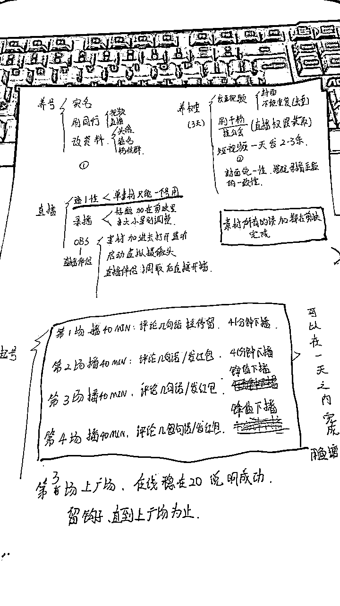
在经历了近一个月的折磨之后终于有数据了
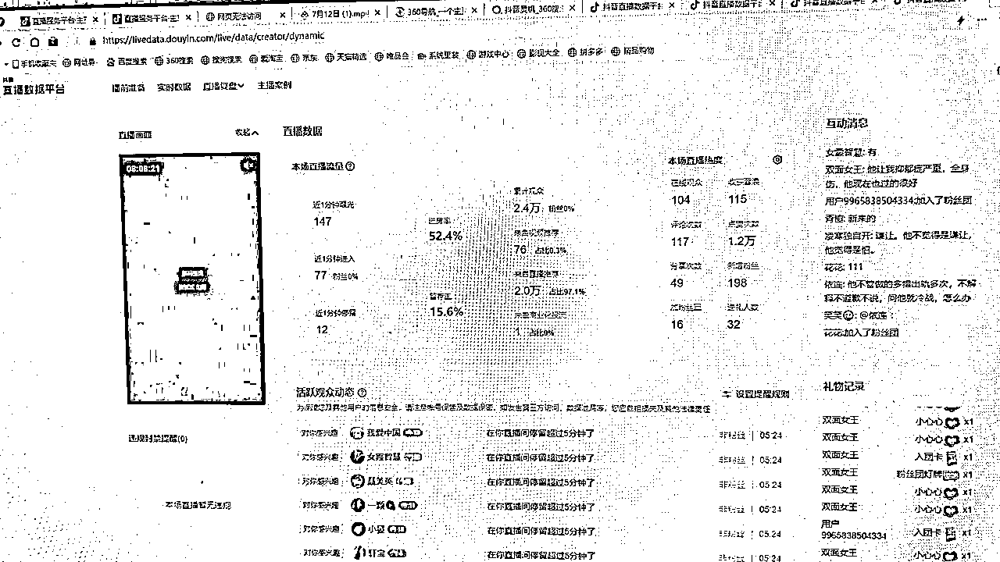
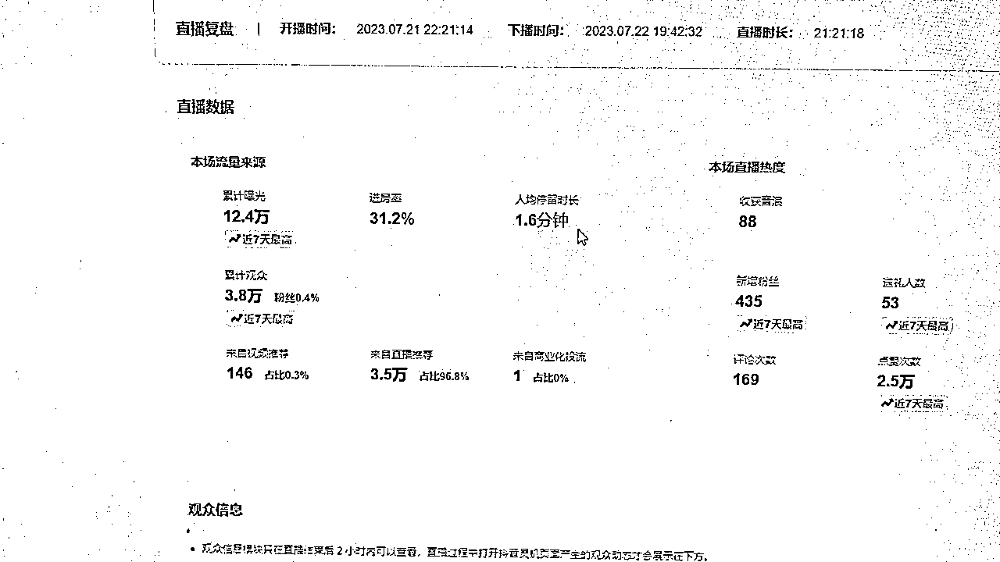
进粉丝群的人有200多，但是加微信的人30个都没有
我们第一个录播的号的话，产出到4000左右就被封30天
但是这没关系，因为模型就是必然封号的
我们的目的就是为了引流进私域，封了就再换就行
如果没有这个觉悟就不太适合做这个类目
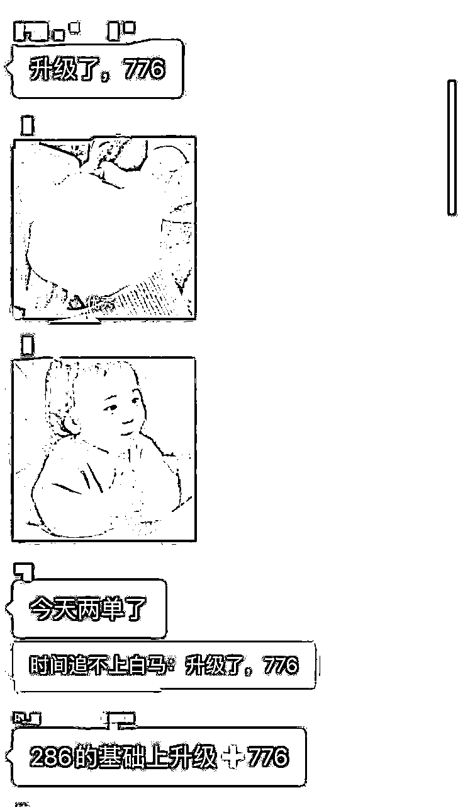
录播可以应用到其它类目上面，他是可行的，不过要做好封号的觉悟
1.更新素材的速度保持在3天一换，可以减少封号的概率
2.演员的表现力决定了账号的流量层级
3.所有问题的发生，都要先做内部审视，99%的问题都是内部的细节没做到位
三思而后行，方向选对了以后就让时间去发挥作用，比如IP就需要长周期的去孵化，没有数据支撑的事情不要干
为什么放到最后讲，是因为后端是为前端服务的，不同的引流模式要结合不同的后端支持，才有效果
绝大部分都是选择在师傅与顾客之间做一个隔离
转述的方式做交付
个人其实更建议直接让师傅去打电话过去，这样子交付更不容易出问题
后端这里会涉及到非常多的第三方，道场，观，卦师等等
最好的风控就是把前后端都隔离，物理上的隔离
我们是独立后端的，后端负责人直接入观里面驻点
如果只是做咨询，那账号包装什么的我就不说了
收款码你得备多几个
进社群是你最好的选择，国学社群里最不缺的就是卦师....
OK 就写到这里